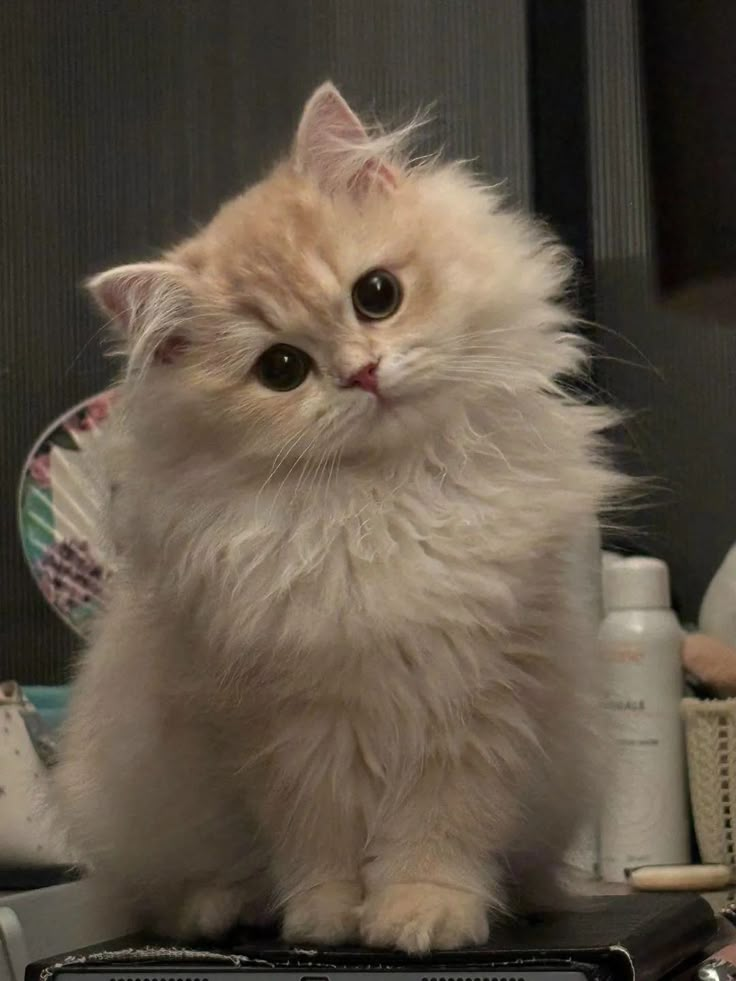
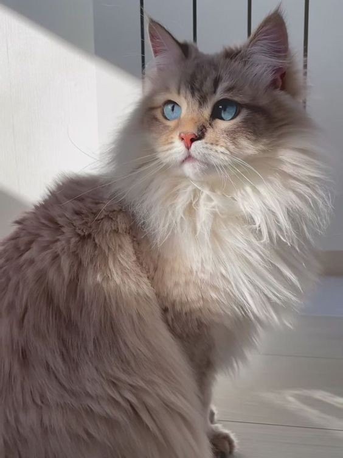

Коты и кошки — одни из самых популярных домашних питомцев. Еще бы, ведь
существует так
много
причин, чтобы умилиться
этим пушистым чудикам! Перечислим же 20 самых интересных из них.
Интересный факт
Хотя черный кот — символ неудачи во многих странах, в Великобритании и Австралии их считают
символом удачи.
Если хвост двигается из стороны в сторону, то в это время кот о чём-то
раздумывает или
принимает решение.
Если уши кота плотно прижаты, значит котик готовится защищаться, а вот если
они
расходятся значит готовится к нападению.